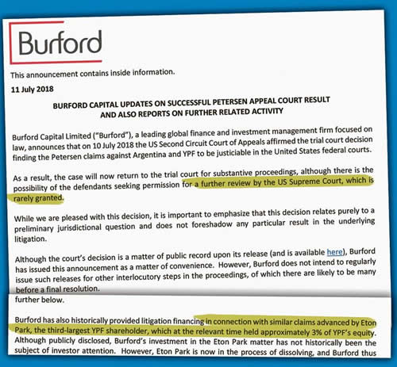

Real Chubut - Agencia de Noticias


Causa YPF: Burford paladea triunfo y administra acciones

• ANUNCIÓ LA ADQUISICIÓN DEL 70% DEL JUICIO DE ETON CONTRA EL PAÍS POR u$s 21 MILLONES
El fondo comenzó la compra y venta de papeles del juicio contra el país por u$s3.000 millones. A sus socios les anticipó ayer que la causa avanza exitosamente y que se espera un rechazo de la Corte.
Especulando con un resultado final favorable en el juicio contra la Argentina por la manera en que se reestatizó YPF, y ya con tres fallos a favor en la Justicia nortemericana, el fondo Burford Capital hizo ayer un doble anuncio público. Por un lado, compró el juicio paralelo que otro fondo, el Eton, le está haciendo al país también por la manera en que se reestatizó la petrolera. Por el otro, comenzó una tarea de "trader" entre los accionistas del juicio que Burford administra que quieren salir a cambio de una rentabilidad, y los que quieren entrar. En todos los casos, a los inversores interesados ofrece rentabilidades imposibles de conseguir en los mercados de capitales normales. Y todo bajo la supuesta garantía de una victoria final y que el Gobierno argentino, en algún momento, pagará los u$s3.000 millones del caso.
Burford envió ayer un comunicado privado a sus accionistas donde anuncia la compra del 70% de la causa de Eton contra Argentina, en unos u$s21 millones. Esta demanda, también radicada en el juzgado de primera instancia del Distrito Sur de Nueva York, se basa en los daños que la manera en que el Gobierno de Cristina de Kirchner reestatizó la petrolera en 2012, sin ofrecer el mismo pago que se le liquidó a Repsol por u$s5.371 millones por el 51% de las acciones al resto de los socios. Para Eton Park, la forma de realizar la nacionalización prohibiendo que se repartieran dividendos durante un tiempo (el mismo argumento del juicio original de Burford), provocó que las acciones de ADR de la empresa en Nueva York se desplomaran en el período 2012-2015, haciéndoles perder millones de dólares a los accionistas minoritarios. Según Eton, lo que correspondía para el Gobierno argentino, era concretar una OPA para la compra total de la empresa, o la opción de permitir una capitalización a partir de la distribución de ganancias de la petrolera, algo que el Gobierno de Cristina de Kirchner prohibió. La causa fue avalada por la jueza Loretta Preska, que a su vez heredó todo el caso de manos de Thomas Griesa, y quedó a la espera de un fallo definitivo en la Cámara de Apelaciones de Nueva York, donde el martes se ratificó que el caso se tratará en los Estados Unidos. La causa iniciada por Eton, y que suma otros fondos accionistas de la compañía que se presentaron en el juzgado pero aún no fueron avalados como reclamantes, alcanzaría los u$s800 millones, de los cuales, se supone, Eton detentaba unos u$s300 millones. Ayer Burford le compró el 70% de su parte de la demanda en u$s21 millones, mientras que el fondo vendedor se quedó con el 30%. Eton Park había adquirido en diciembre de 2010 el 1,63% del capital de YPF (entonces controlada por Repsol) por unos u$s250 millones, y nunca vendió su parte hasta ayer. La venta a Eton por parte de los españoles de Repsol, un fondo altamente especulativo, fue que la petrolera necesitaba capitalizarse para avanzar en inversiones en el norte de África. La operación de YPF no era además la primera en el país. Antes, en 2009, había comprado acciones por el 5% cotizante de Pampa Energía; papeles que en parte vendió durante el alza de los valores de las energéticas en el Merval en octubre del año pasado.
Además de la compra de parte de la demanda de Eton, ayer Burford anunció que profundizará su tarea de "trader" de las acciones que detenta en la causa contra Argentina en Nueva York; manejando la demanda de los que quieren entrar y los que quieren salir. Para entender la actividad, hay que mencionar que Burford no es en realidad un fondo de inversiones o directamente un fondo buitre al estilo Elliott o Dart, sino que se trata de un sofisticado bufete de abogados dedicados a comprar juicios con altas posibilidades de éxito, pero con una larga demora en el tiempo para su resolución. La clave del negocio es que la compra del juicio no la hace con capitales propios, sino con inversores que confían en su experiencia y aportan un puñado de capitales en una acción legal determinada y en cualquier mercado del mundo. Tiene sede en Londres (donde cotiza) y sucursales en varios países como Estados Unidos y Singapur. Con el tiempo, los accionistas que acompañan una causa pueden a su vez vender esos papeles o comprar una porción mayor. Burford lo que hace luego es administrar la venta y compra de esas acciones. En el caso de YPF, y luego de la victoria obtenida el martes, las acciones se cotizan más altas, dadas las serias posibilidades de éxito en el caso y la convicción de que Argentina pagará. El dato que no tiene Burford es cuándo la Cámara de Apelaciones de Nueva York definirá la causa, y, como figura en el comunicado a sus accionistas, si luego Argentina decidirá apelar ante la Corte Suprema y dilatar más la resolución. Ante este panorama, y sabiendo que con la decisión del martes de la Cámara las acciones ya rindieron suficiente, hay accionistas de la causa que eligen vender y capitalizar. Y, obviamente, otros quieren entrar. Para juntar las partes, Burford realiza la tarea de trader y administrador y garantiza el secreto de los participantes.
La del martes fue la tercera victoria legal de Burford en la causa. El primer éxito fue en 2015 con la aceptación de Griesa de tomar la causa. Después vino la victoria en primera instancia de octubre de 2016 con un fallo a favor de parte de Preska. Argentina apeló en la segunda instancia, y el martes la Cámara ratificó la causa y ahora se espera la resolución final, la que podría definirse antes de fin de año. Luego será el turno del país para saber si opta por un pedido de acumulación de apelaciones (proceso denominado En Banc) o si se apela a la Corte Suprema de los EE.UU. Burford reclama por los supuestos daños que el pago a los españoles de Repsol le provocó al 49% restante de los accionistas de la petrolera, luego de la nacionalización de 2012. Ese dinero iría, en parte (unos u$s1.000 millones) a las arcas del fondo Burford.